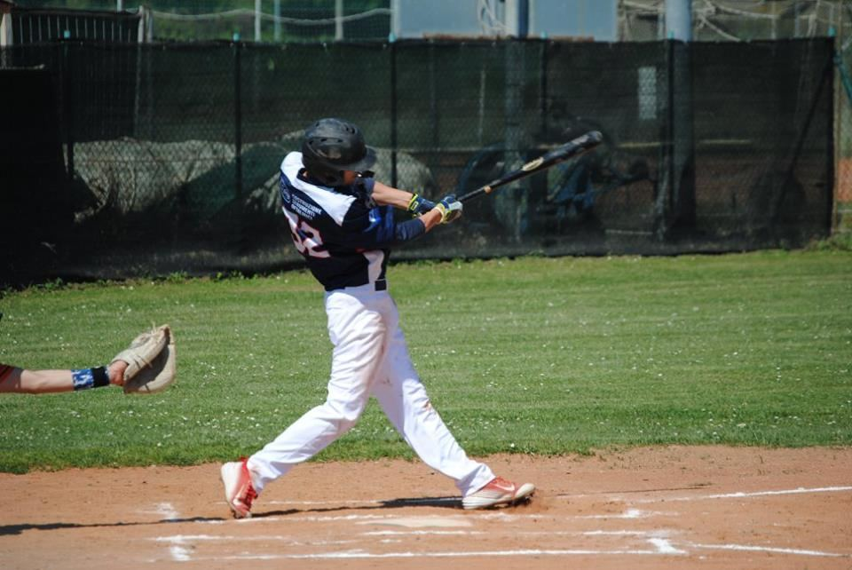
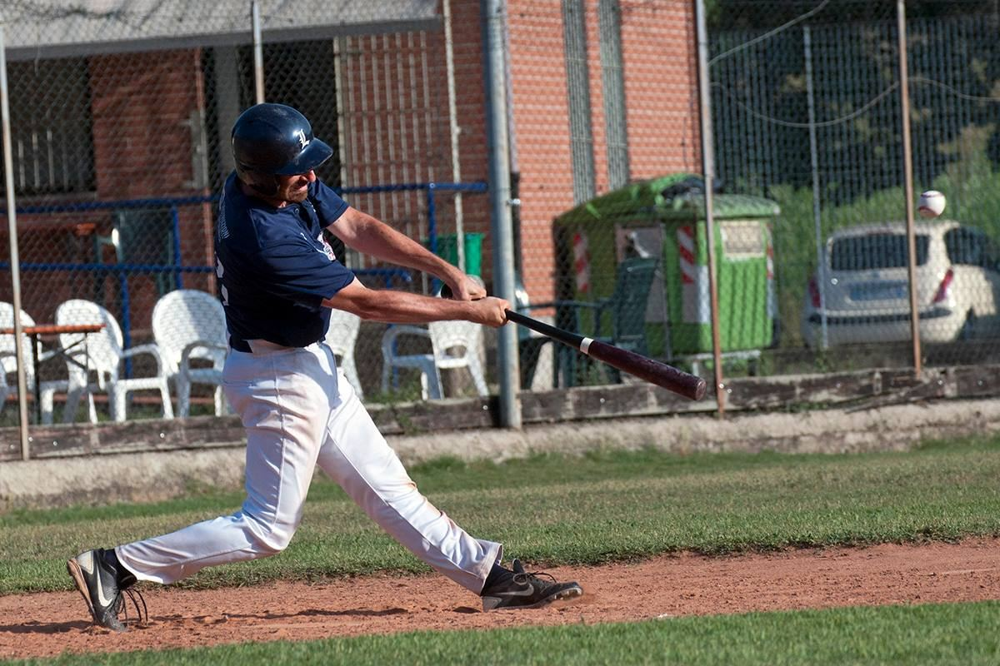

Sul campo degli Yankees arriva una doppia sconfitta amara per i Lancers che fino ad allora avevano all’attivo solamente due risultati negativi (su 12 partite ndr), uno per mano del Fano con il risultato di 3-1 e l’altro contro Longbridge (10-5 il finale).
Un percorso eccellente che la sfortuna, la determinazione degli avversari e qualche gioco non riuscito ha interrotto.
Le ultime settimane hanno messo a dura prova la squadra di Lastra a Signa che ha dovuto affrontare ben tre trasferte consecutive rispettivamente contro quarta, prima e seconda della classifica; alla fine si conteranno 3 vittorie a fronte di 3 sconfitte.
Tutto sommato un buon risultato che però non soddisfa a pieno i Lancers, l’ultimo fine settimana è mancato il cinismo necessario per strappare un doppio successo ampiamente alla portata.
La prima gara è sicuramente quella che il team guidato da Rosellini dovrà ricordare per non commettere gli stessi “errori”, una partita tenuta in pugno fino a soli due out dalla fine.
L’attacco dei Lancieri non è nella sua migliore giornata ma riesce comunque a costruire a piccoli passi un buon vantaggio colpendo i lanci del partente degli Yankees, ottimo lanciatore per la categoria.
Guidati da un Degl’Innocenti intoccabile sul monte di lancio per otto riprese consecutive, i Lancers hanno mantenuto il vantaggio fino all’ultima ripresa quando, il team emiliano, ha sfruttato al massimo l’unica vera occasione della partita pareggiando i conti.
Si va al tie break; con due out e le basi piene ci pensa Nannucci con un’insidiosa battuta lungo la linea di foul a far correre i propri compagni a punto per il momentaneo 6-3.
Al cambio campo la fortuna non aiuta i Lancieri, una facile rimbalzante in prima, che potrebbe trasformarsi in doppio gioco, supera di pochi centimetri in altezza il guanto di Baratella e da la carica alla formazione di San Giovanni in Persiceto che confeziona le battute “perfette” per pareggiare ed infine vincere l’incontro sul rilievo Pistol.
In battuta ottima prestazione di Geri e Reggioli con tre valide ciascuno e Nannucci con i 3 RBI che potevano chiudere l’incontro alla decima ripresa.

Gara 2 scorre via velocemente, poche battute valide da entrambe le parti, 4 per i Lancers e 7 per gli Yankees, quest’ultimi sfruttano le poche occasioni come fatto nella gara del mattino e guadagnano i 2 punti necessari alla vittoria.
Il partente Morese si rende protagonista di un’altra ottima partita lanciata che purtroppo non viene finalizzata dai compagni nel box di battuta, a volte sfortunati con buone battute direttamente nei guanti avversari e spesso poco determinati a conquistare la base.
La gara viene chiusa da Vannuzzi sul monte con una ripresa lanciata senza subire punti, la nona della stagione; nel box di battuta ancora una buona prova di Reggioli con due hit, stesso numero per Nerbini.
A differenza delle partite giocate il weekend precedente con il Longbridge, è mancata la voglia di riscattarsi dopo la sconfitta, la determinazione giusta per portare a casa un pareggio utile in termini di classifica.
Adesso si pensa già alle partite di domenica contro il Chieti, l’umore del team è buono e resta invariata anche la convinzione dei propri mezzi; le sconfitte fanno male ma a volte occorrono per analizzare la situazione e crescere come collettivo.
Nel frattempo lo staff tecnico confida di poter avere a disposizione una formazione più completa, dopo il rientro di Albano si confida la disponibilità di Cano, Ortiz e Menoni per le gare in programma domenica sul Lancers Field.
LE ALTRE CATEGORIE
La Serie C è l’unica altra squadra scesa in campo lo scorso fine settimana, purtroppo gara negativa anche per i ragazzi di Gentini e Manuli che escono sconfitti dal confronto con il Massa Baseball per 13-3.